Intrument Articulation
Intrument Tips Writing Link to heading
Piano Link to heading
Articulation Guide Link to heading
-
Slur is the same as legato
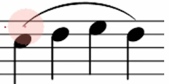
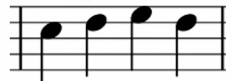
-
Phrasing: Slur in group: create a break between the slur to mimic punctuation
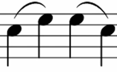
-
Staccato: lift finger quickly: finger on fire: opposite of slur
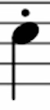
-
Staccatissimo: exaggerated staccato; choppy, make the note distinct (old fashion) -> use staccato
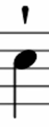
-
Portato: half-slur, half-staccato, smooth + defined: more separated than a slur
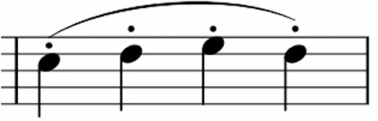
-
Accent = Sforzando: Louder
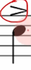
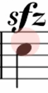
-
Marcato: staccato had a baby: loud + choppy
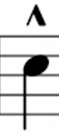
-
Tenuto: Long + Strong: hold the note as long as it can be: oposite of staccato
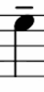
-
Tenuto vari: little detached: deliverate and emphatic: pretty much the same as tenuto
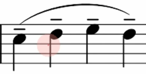
-
Fortepiano: Loud on the first, piano for the subsequent: loud then piano
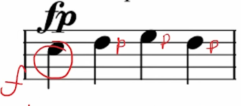
Flute Link to heading
- flute sound
- slow sustend music
- air and tongue sound
- no sound (percussion)
- Include the inhale and exhale in the piece
Main techniques Link to heading
1. Key clicks Link to heading
- percussive technique
- only available when solo (due to volume)
- Downward clicks are effective: A-G-F-E-D, ascending requires extra key button.
- can be produced with or wthout sound
- In fast tempo, they will bounce back up (and catch two sound)
- Notated as:
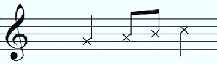
- Don’t use too much as they can damage the flute
2. Tongue Ram Link to heading
- percussion technique
- loud
- exhausting -> need time to recover
- Sound like Tongue pizziato, but with air going into flute
- sounds a majot 7th lower than the fingered note
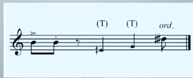
3. Flute/flutter Tongue Link to heading
Flute sound
- sound of a chuchu train(middle - high)/thunderstorms wind (low)
- tonguing sound
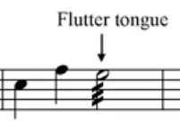
4. Aeolian sound Link to heading
- air sound
- flute sound coming out, but not quite
- low B to mid E/F
- very quiet
5. Jet Whistle Link to heading
- loud
- exhausting -> need time to recover
- as the title said, Jet Whistle by the flute
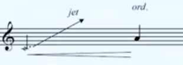
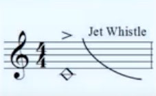
6. Harmonic trills or Bisbigliando Link to heading
- use a perfect fouth below the note
- think about violin harmonic
- Based on the harmonic series
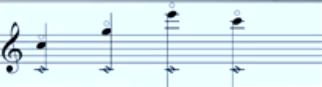
Other techniques Link to heading
Tongue pizziato and Beatbox Link to heading
- only available when solo (due to volume)
- have speed restriction
- better in ascending scale
White Noise Link to heading
- simply blowing air into flute
- air goes out very fast, does not last very long
Glissando (lip & finger) Link to heading
Work best in slow tempo lip
- lip do the inward and outward motion
- possible in all registers finger
- not convinient in high registers
- easier in middle and low registers
- Convinient finger glissando: B-A-G-#F-F-E-D
Multiphonics Link to heading
- Easiest in low register
- very challenge for fluist when fast tempo
- play loud and quikcly
- let player find the note
- Need to find the right ones, that can transit smoothly and good response on flute
- certain notes has to be played loud and some needs to be played soft
Singing while playing Link to heading
- as described
- multiphonic
Trimolo Link to heading
- Always ask the fluest
- doable trimolo: A-E#
Whistle tones Link to heading
whistle playing on flute